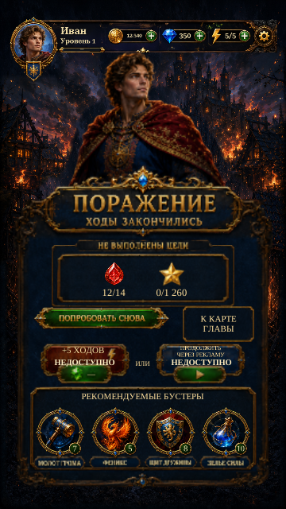

Fail and Out of Energy — phone readability
Actual Unity Play Mode captures from the installed prefabs, using isolated test saves and simulated display sizes/safe areas. These are not physical-phone captures. One portrait is shown at a time.

Implemented · Fail · Russian · 360 × 640
Fail: larger goal counts, availability notes and booster-help text; the larger map control sits beside Retry. Existing Russian extracted lettering and shared booster artwork remain in use.
Out of Energy: larger message and timer captions, live bilingual offer headings, full-width explanatory lines, and a larger close target. Disabled action labels fit inside their painted button faces; purchase, friend and ad offers remain unavailable.
Verification results and remaining limits. Native lettering and small decorative captions are not all subject to a universal minimum size. Device readability and touch acceptance remain deferred.